1. KlinikKoç nedir?
KlinikKoç, diş hekimliği öğrencileri için açık kaynaklı ve kâr amacı gütmeyen bir çalışma aracıdır. Dersi Türkçe sesli anlatır, tahtada şekil gösterir, sonra sizi klinik vakalarda adım adım karar vermeye çalıştırır. Takıldığınız yerde ilgili konuyu yeniden anlatır.
- Program derssiz gelir. Her ders, öğretmeninizin verdiği bir ders paketidir (.zip dosyası). Paketi eklediğinizde ders listede belirir.
- Sorular not için değildir. Cevaplarınız, karneniz ve raporlarınız yalnız sizin bilgisayarınızda durur; hiçbir yere gönderilmez.
- İki çalışma biçimi vardır: internetsiz çalışan oynatıcı (hazır anlatım ve sorular) ve Claude masaüstü uygulamasıyla çalışan canlı tahta (sohbet, sesli soru-cevap, vaka, rubrikle puanlama). Canlı tahta sizin Claude aboneliğinizle çalışır; ek ücret ya da API anahtarı gerekmez.
2. Kurulum
Kurulum bir kez yapılır. Gerekenler: Python 3 (3.12 önerilir)
ve canlı tahta için Claude masaüstü uygulaması. KlinikKoç klasörünü indirip bir yere açın
(ör. Belgeler). Zip açılınca içinde tek bir KlinikKoç klasörü (ör. klinikkoc-v3) çıkar; KUR ve BASLAT dosyaları
onun içindedir. Klasörün yerini sonra değiştirmeyin; değiştirirseniz kurulumu yeniden çalıştırın.
Windows
- Python'u kurarken ilk ekrandaki "Add python.exe to PATH" kutusunu işaretleyin.
- KlinikKoç klasöründeki KUR-Windows dosyasına çift tıklayın. Windows dosya uzantılarını gizleyebilir; adı yalnız "KUR-Windows" görünür.
- Kurulum üç adım yapar: ses paketleri ve PDF okuyucu, Claude'a KlinikKoç araçlarının eklenmesi, isteğe bağlı doğal Türkçe ses (yaklaşık 1 GB, "E" ya da "H" ile seçilir).
- Claude'u tamamen kapatın: saatin yanındaki ^ işareti → Claude simgesi → sağ tık → Çık. Sonra yeniden açın.
- Denetim: Claude'da Ayarlar › Geliştirici ekranında "klinik-koc" Çalışıyor görünmeli.
Mac
- KlinikKoç klasöründeki KUR-Mac dosyasına çift tıklayın.
- macOS "geliştiricisi doğrulanamadı" derse dosyaya sağ tıklayıp Aç → Aç deyin.
- Python 3 yoksa kurulum bunu söyler; python.org'dan kurup KUR-Mac'i yeniden çalıştırın. "SSL: CERTIFICATE_VERIFY_FAILED" hatası görürseniz Uygulamalar → Python 3.x klasöründeki Install Certificates dosyasına çift tıklayın.
- Claude'u Cmd+Q ile kapatıp yeniden açın.
- Denetim: Ayarlar › Geliştirici ekranında "klinik-koc" Çalışıyor görünmeli.
KlinikKoç'u açmak
KlinikKoç'u üç yoldan açabilirsiniz:
- BASLAT-Windows (Mac'te BASLAT-Mac) dosyasına çift tıklayın. Bir pencere açılır ve ana sayfa tarayıcıda görünür. Pencere açık kaldıkça KlinikKoç çalışır; işiniz bitince pencereyi kapatın. Ders paketi eklemek, makaleler ve öğretmen sihirbazı bu yolla (ya da Claude'la) açıldığında çalışır.
- Claude'a yazın: Claude'a: "KlinikKoç'un ders paketleri sayfasını aç."
- Yalnız oynatıcı için
index.htmldosyasına çift tıklamak da yeter (internetsiz çalışır), ama o zaman ders paketi eklenemez.
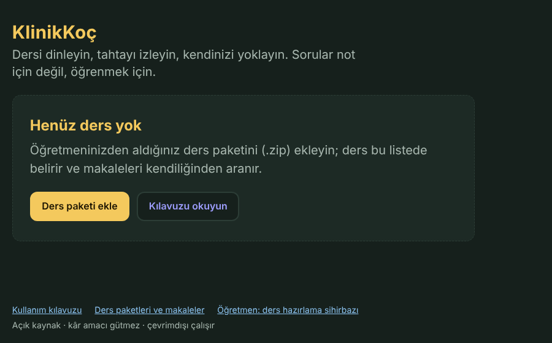
3. Öğrenci: ders eklemek ve çalışmak
Ders paketi eklemek
- Öğretmeninizden ders paketini (ör.
akut-periodontal-lezyonlar-acik.zip) alın ve bilgisayarınıza kaydedin. Zip'i açmayın; olduğu gibi kullanılır. - Ana sayfada Ders paketi ekle'ye basın (ya da altta Ders paketleri ve makaleler).
- Zip dosyasını Ders paketi ekle alanına sürükleyip bırakın ya da alana tıklayıp dosyayı seçin.
- "Kuruldu" yazısı çıkar ve makaleler kendiliğinden aranmaya başlar. Ders artık ana sayfadaki listededir.
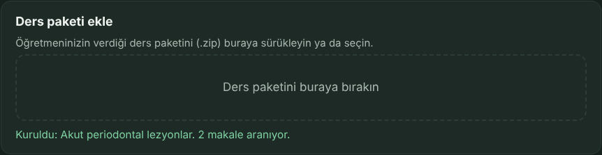
Claude kullanıyorsanız paketi ona da kurdurabilirsiniz:
Claude'a: "İndirilenler klasöründeki akut-periodontal-lezyonlar-acik.zip ders paketini kur."
Makaleler
Ders paketinde makalelerin kendisi değil, yalnız listesi (künye ve DOI) vardır. KlinikKoç makaleleri bilgisayarınıza kendisi indirir, okur ve eğitmenin aramasına ekler. Böylece eğitmen sorularınızı bu makalelere dayanarak cevaplar.
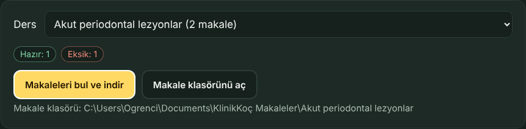
Makaleler şu sırayla aranır: bilgisayarınızdaki makale klasörü, açık erişimli sürüm (OpenAlex, Europe PMC), son olarak yayıncının sayfası. Bilgisayarınız üniversite ağındaysa (kampüste eduroam ya da üniversitenin VPN'i) abonelikli dergiler de çoğu zaman iner. KlinikKoç hiçbir kullanıcı adı ya da şifre kullanmaz.
Makalenin şekilleri. Abonelikli bir makalenin şekilleri ders paketinde yoktur; paket yalnız şeklin makalede nerede olduğunu bilir. Makale bilgisayarınıza inince (ya da siz bırakınca) KlinikKoç şekilleri sizin kopyanızdan çizip tahtaya koyar; listede "Makaleden şekil: 6/6" görünür. Makale eklenmeden önce tahtada şeklin yerinde "Şekil … makalede" notu çıkar.
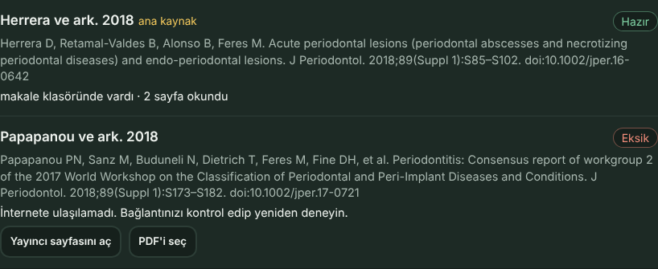
Eksik bir makaleyi elle eklemek: yanındaki Yayıncı sayfasını aç düğmesine basın, PDF'i indirin (gerekirse üniversite ağından ya da kütüphane üzerinden), sonra PDF'i aşağıdaki alana sürükleyin. KlinikKoç PDF'teki DOI'den hangi makale olduğunu kendisi bulur.
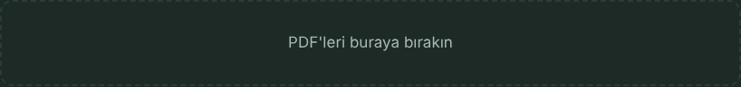
Kendi makalelerim (derse bağlı olmayan PDF'ler)
Hiç ders yüklemeden de kendi makalelerinizle çalışabilirsiniz. Sayfadaki ders listesinden
Kendi makalelerim'i seçin (hiç ders yoksa zaten seçilidir) ve PDF'i PDF'leri buraya bırakın
alanına bırakın. Makale okunur ve aramaya eklenir; PDF Belgeler\KlinikKoç Makaleler\Kendi makalelerim
klasörüne kopyalanır. Sonra Claude'la çalışın:
Claude'a: "Tahtayı aç, kendi makalelerimden çalışalım. Adım Ayşe."
Eğitmen yalnız bu makalelerde yazanla konuşur; hangi makaleyle çalışmak istediğinizi sorar. Bu çalışma ana sayfadaki ders listesinde görünmez. Claude'a "şu PDF'i kendi makalelerime ekle" diyerek de ekleyebilirsiniz.
Belgeler\KlinikKoç Makaleler\<ders adı> klasöründe durur
(Mac'te Belgeler/KlinikKoç Makaleler). Bu klasör sizindir: ders silinse ya da arşivlense de PDF'ler
burada kalır ve ders yeniden kurulunca tekrar indirilmez.Oynatıcıyla çalışmak (internetsiz)
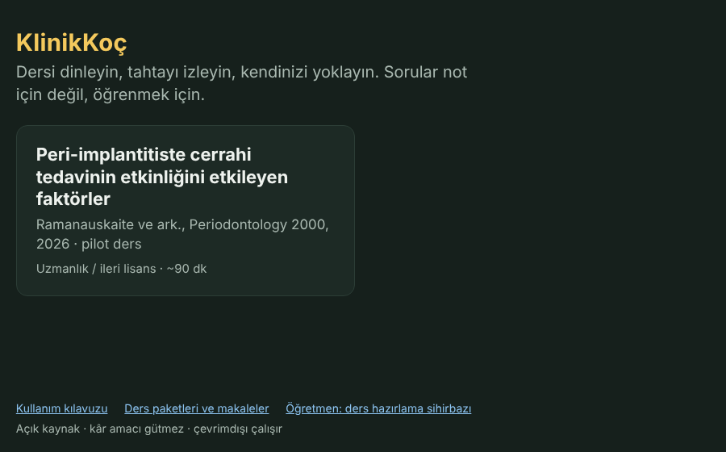
Oynatıcı dersi adım adım anlatır: tahtada şekil belirir, ilgili yer işaretlenir, altta anlatılan cümle altyazı olarak görünür. Bölüm sonlarında Kendini yokla soruları gelir.
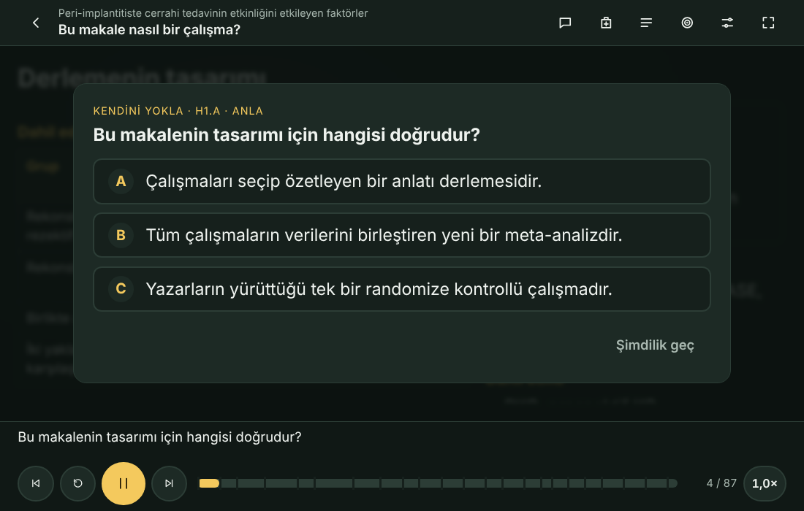
| Ne yapmak istiyorsunuz? | Nasıl? |
|---|---|
| Durdurmak / sürdürmek | Ortadaki sarı düğme ya da Boşluk |
| Sonraki / önceki adım | → ← ya da tahtada parmağınızı sola / sağa kaydırın |
| Anlatım hızı | Sağ alttaki 1,0× düğmesi |
| İçindekiler, hedefler, ayarlar | Sağ üstteki düğmeler (hedefler tablosunda yeşil: ulaşıldı, kırmızı: tekrar edin) |
| Tam ekran | Sağ üstteki köşeli düğme ya da F |
Canlı tahtada Claude ile çalışmak
Canlı tahtada dersi Claude'un eğitmeni yönetir: anlatır, sorularınızı cevaplar, vakada size karar verdirir, açık uçlu cevaplarınızı puanlama ölçütüyle (rubrik) değerlendirir. Lisans derslerinde eğitmen İnci, uzmanlık derslerinde Mercan'dır; hangisi olduğunu ders paketi belirler.
Claude masaüstü uygulamasında yeni bir sohbet açıp yazın:
Claude'a: "Tahtayı aç, akut periodontal lezyonlar dersine başlayalım. Adım Ayşe, numaramın son üç hanesi 123."
- Claude araçları ilk kullanırken izin ister; Her zaman izin ver demeniz işinizi kolaylaştırır.
- Tarayıcıda canlı tahta açılır. Bir kez Tam ekran başlat'a (ya da Pencerede başlat'a) dokunun; tarayıcı sesin çalması için bunu ister.
- İlk girişte eğitmen adınızı ve kısa bir ayırt ediciyi (ör. numaranızın son üç hanesi) sorar. Böylece aynı adlı iki öğrencinin kaydı karışmaz.
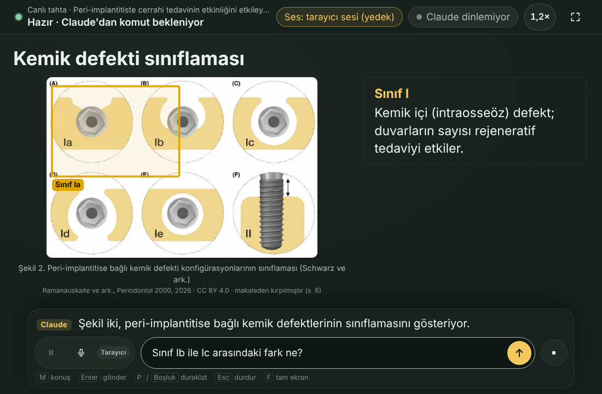
- Yazarak sormak: kutuya yazıp Enter'a basın. Yazmaya başladığınızda anlatım kendiliğinden duraklar.
- Sesle sormak: mikrofona dokunun (M) ve konuşun. Söyledikleriniz 2–3 saniye kutuda görünür; yanlış yazılmış bir terim varsa kutuya dokunup düzeltin.
- Duraklatmak: P ya da Boşluk; durdurmak: Esc.
- Tahtada "Sorunuz bekliyor" yazarsa Claude o an sizi dinlemiyordur. Otomatik gönder açıksa (varsayılan) sorunuz birkaç saniye içinde Claude sohbetine kendiliğinden gönderilir; Claude penceresi bir an öne gelip geri döner. Kapalıysa ya da gönderilemezse sohbete "tahtaya bak" yazın.
İşinize yarayacak birkaç cümle:
Claude'a: "Bu dersin vakasını çözelim." · "Bunu bir daha anlatır mısın?" · "Sözlü sınav provası yapalım." · "Mola verelim, sonra kaldığımız yerden devam ederiz."
Canlandırma: Claude diş ya da implant çizimini gözünüzün önünde değiştirebilir: dişeti şişer, sonda derine iner, kemik geriler (ör. sağlıklı → gingivitis → periodontitis). Duraklatınca canlandırma da durur.
Claude'a: "Gingivitisin periodontitise dönüşmesini tahtada canlandır." · "Sağlıklı implantın peri-implantitise gidişini göster."
Karne ve rapor
Karne hedef başına ve düşünme düzeyine (hatırla, anla, uygula, çözümle, değerlendir, oluştur) göre nerede olduğunuzu gösterir; en çok zorlandığınız soruları ve vakalardaki riskli seçimleri listeler. Not değildir, kendinizi geliştirmeniz içindir.
Claude'a: "Karnemi göster." · "Öğretmenim için rapor yaz."
Rapor bilgisayarınızdaki kayıt klasörüne yazılır. Öğretmeninize vermek isterseniz dosyayı kendiniz gönderirsiniz.
4. Ders bitince
Tamamlama raporu
Dersi bitirdiğinizde Claude'a söyleyin. Eğitmen önce derse dair bir notunuz olup olmadığını sorar, sonra tamamlama raporunu yazar: hedefleriniz, zorlandığınız konular, vakalar, çalışma süresi ve notunuz. Ders yerinde kalır; istediğiniz zaman yeniden açabilirsiniz.
Claude'a: "Bu dersi bitirdim."
Değerlendirme formu
Rapordan sonra tarayıcıda 2–3 dakikalık bir değerlendirme formu açılır. Doldurmak isteğe bağlıdır ve formda adınız ya da numaranız yoktur. İki bölümü vardır:
- Sizin görüşünüz: 1–5 arası puanlanan cümleler, dersin uzunluğu ve zorluğu, ses ve mikrofon, dört kısa açık uçlu soru. Öğretmeniniz derse özel soru eklemiş olabilir.
- Eğitmenin (Claude) tespitleri: Claude'un ders sırasında fark ettiği sorunlar (yanlış ya da eksik bilgi, belirsiz soru, dikte hatası…) ve programın kendiliğinden kaydettikleri (araç hataları, kaynakta cevabı olmayan sorular, inmeyen makaleler). İstemediğinizi Çıkar ile çıkarın, eklemek istediğinizi yazın.
Kaydet deyince form Belgeler\KlinikKoç Değerlendirmeler klasörüne yazılır; hiçbir yere
kendiliğinden gitmez. Öğretmeniniz adresini derse eklediyse E-postayla gönder e-posta programınızı açar,
siz gönderirsiniz. Ad, numara ya da hasta bilgisi yazmayın.
Claude'a: "Bu dersin değerlendirme formunu aç."
Tekrar kartları
Dersi bitirince zorlandığınız sorulardan en çok 10 tekrar kartı çıkar. Kartlar 3, 7, 21 ve 60 gün sonra yeniden sorulur; bildikçe aralık uzar, yanılırsanız ertesi güne döner. Kartlar çok küçüktür (yalnız yazı) ve ders arşive kaldırılsa bile sizinle kalır.
Claude'a: "Bugün tekrar zamanı gelen kartlarım var mı?"
Eğitmen bir derse başlarken zamanı gelen kartlarınızı da kendiliğinden sorar.
Depolama ve arşiv
Dersler ve makaleler zamanla yer kaplar. Varsayılan sınır 2 GB'tır; Ders paketleri ve makaleler sayfasının en altındaki Depolama ve arşiv bölümünden değiştirebilirsiniz. Sınır aşılınca sayfa ve eğitmen size hangi dersleri arşive kaldırmak istediğinizi sorar. Arşivleme kendiliğinden yapılmaz; siz seçersiniz.
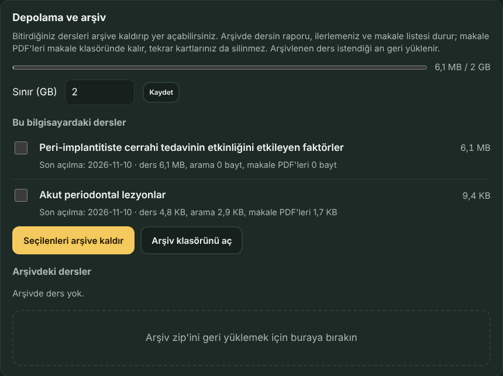
- Arşive ne girer? Dersin dosyaları, ilerlemeniz, karneleriniz, raporlarınız ve makale listesi.
Arşiv
Belgeler\KlinikKoç Arşivklasöründe tek bir zip olarak durur. - Ne kalır? Makale PDF'leri makale klasöründe, tekrar kartlarınız ve kayıtlarınız yerinde kalır.
- Güvenli mi? Önce arşiv yazılıp denetlenir; ancak sorun yoksa ders bilgisayardan kaldırılır.
- Geri getirmek: Arşivdeki dersler listesinde Geri yükle'ye basın ya da arşiv zip'ini alttaki alana bırakın. Ders, ilerlemenizle birlikte geri gelir; bu bilgisayarda daha yeni bir kaydınız varsa o korunur.
Kayıtlarınız nerede?
Kayıtlarınız program klasörünün dışında durur; programın yeni sürümünü kurup eskisini silseniz de kaybolmaz.
| Ne? | Windows | Mac |
|---|---|---|
| İlerleme, karne, raporlar, tekrar kartları | %APPDATA%\KlinikKoc\kayitlar |
~/Library/Application Support/KlinikKoc/kayitlar |
| Makale PDF'leri | Belgeler\KlinikKoç Makaleler | Belgeler/KlinikKoç Makaleler |
| Arşivlenen dersler | Belgeler\KlinikKoç Arşiv | Belgeler/KlinikKoç Arşiv |
- Windows'ta yolu Dosya Gezgini'nin adres çubuğuna yazın; Mac'te Finder → Git → Klasöre Git… ile açın.
- Başka bilgisayara taşımak: Claude'a "kayıtlarımı dışa aktar" deyin; masaüstüne tek bir dosya yazılır. Öbür bilgisayarda "şu dosyadaki kayıtlarımı içe al" deyin.
- Silmek: Claude'u kapatıp kayıt klasörünü (ya da içindeki kendi adınızla başlayan klasörü) çöp kutusuna atın.
5. Öğretmen: ders hazırlama sihirbazı
Sihirbaz, bir dersi dosya yazmadan, ekrandan adım adım hazırlamanızı sağlar. Sonunda öğrencilere vereceğiniz ders paketleri çıkar. Sihirbaz önerir, siz onaylarsınız: onaylamadığınız hiçbir şey derse girmez.
Sihirbazı açmak
KlinikKoç'u BASLAT dosyasıyla ya da Claude'la açın, ana sayfanın altındaki Öğretmen: ders hazırlama sihirbazı bağlantısına basın. Daha önce başladığınız taslaklar Ders taslağı listesinde durur; yeni bir ders için Yeni ders aç'a basın.
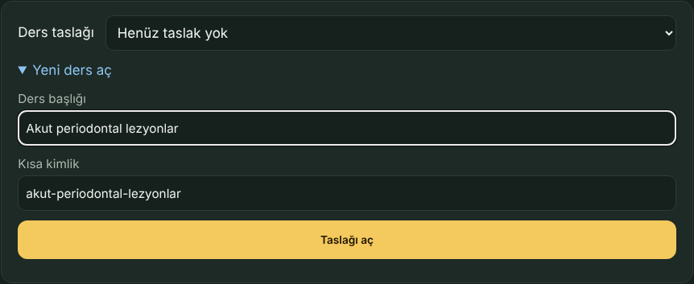
Altı adım
1. Ders kartı. Başlık, yaklaşık süre, düzey (Lisans / Uzmanlık) ve eğitmen (İnci lisans, Mercan uzmanlık).
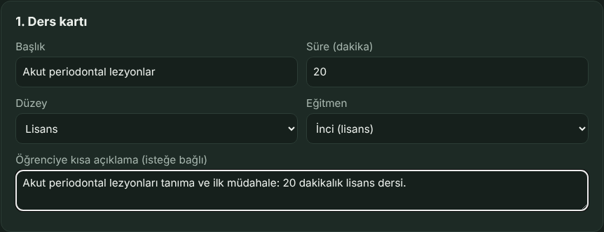
2. Makaleler. DOI'leri ya da kaynakçayı olduğu gibi yapıştırın. Künye, özet ve açık erişim bilgisi internetten (Crossref, OpenAlex) gelir. İnternet yoksa makale yine eklenir; sonra Eksik künyeleri yeniden sor'a basın. Bir makaleyi ana kaynak yapabilirsiniz. Pakete makalenin kendisi değil, yalnız künyesi girer.
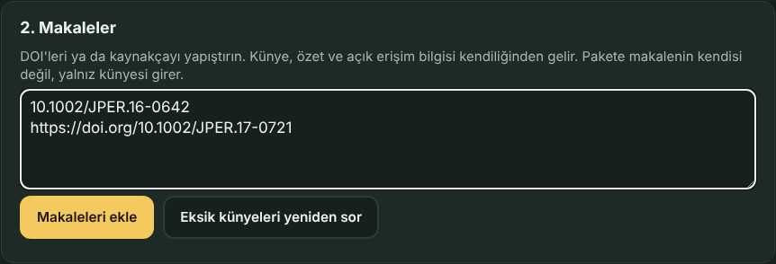
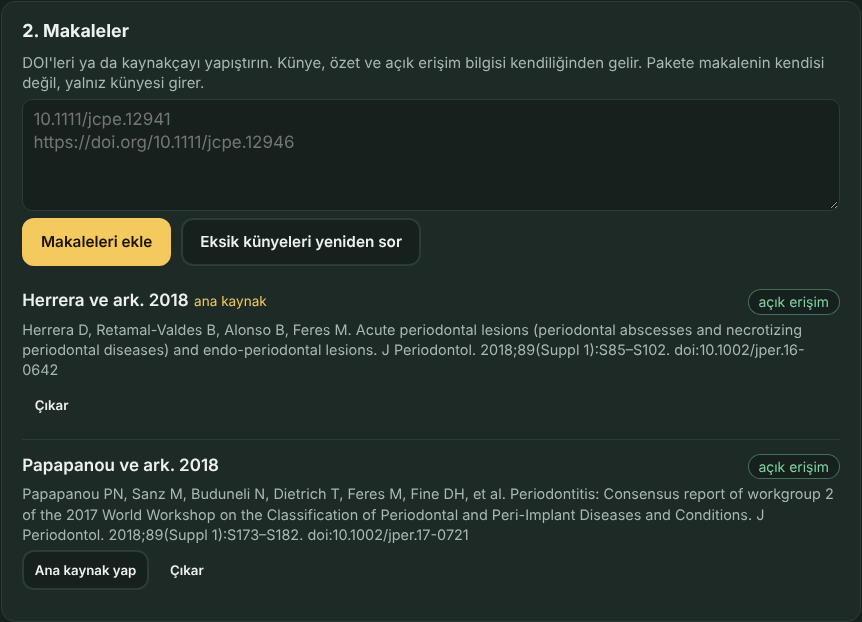
3. Ders notu ve vakalar. Word (.docx), PDF, .txt ya da .md notunuzu bırakın; başlıklarından (Word'de Başlık 1 / Başlık 2 biçemi) bölümlere ayrılır. Eski .doc biçimini Word'de .docx olarak kaydedin. Vaka kartı (.json) ya da kart ve görsellerinin zip'i de bırakılabilir. Bırakmadan önce paylaşım kademesini seçin.
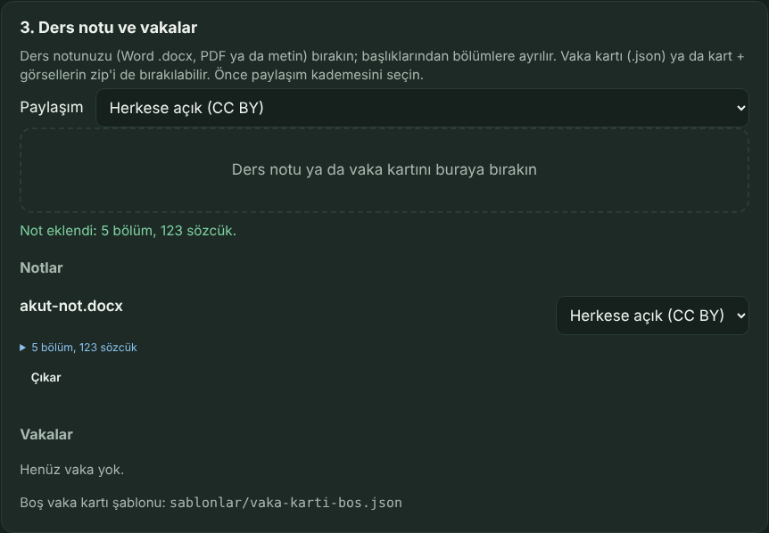
4. Sorular ve eğitimde dikkat edilecekler. Eğitmenin uyacağı notlar (ör. "tanıyı tedaviden önce sor"), öğrencilerin sık yaptığı yanlışlar ve kendi sorularınız.
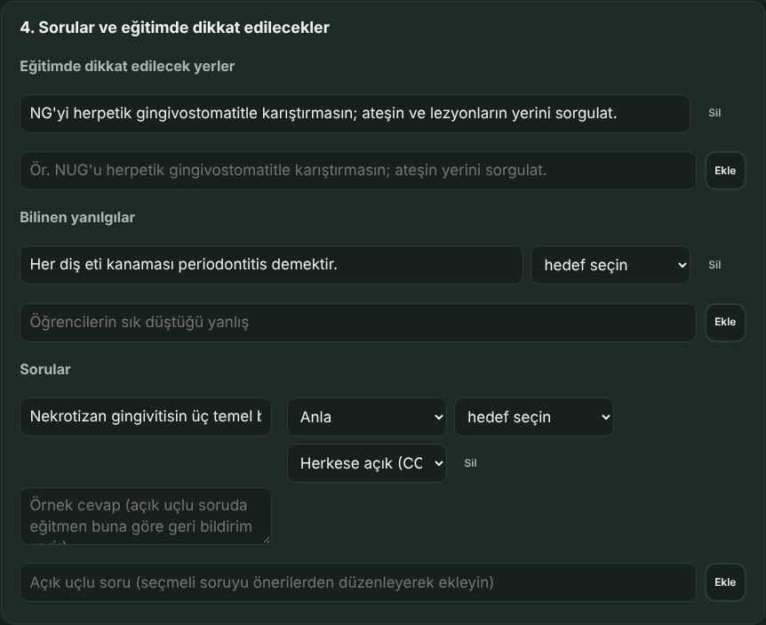
5. Öneriler ve onay. İki yol vardır:
- Hızlı öneriler (internetsiz): not başlıklarından hedef taslakları, fiilden Bloom düzeyi, notta geçen terimler ve hedef başına bir açık uçlu soru. Kaba bir başlangıçtır.
- Claude'un önerileri: Claude notunuzu ve makale özetlerini okuyup hedef, Bloom düzeyi, terim, soru, örnek cevap, rubrik ve yanılgı önerir. Öneriler bu sayfaya gelir. Claude'a: "Akut periodontal lezyonlar dersi için sihirbaz önerilerini hazırla."
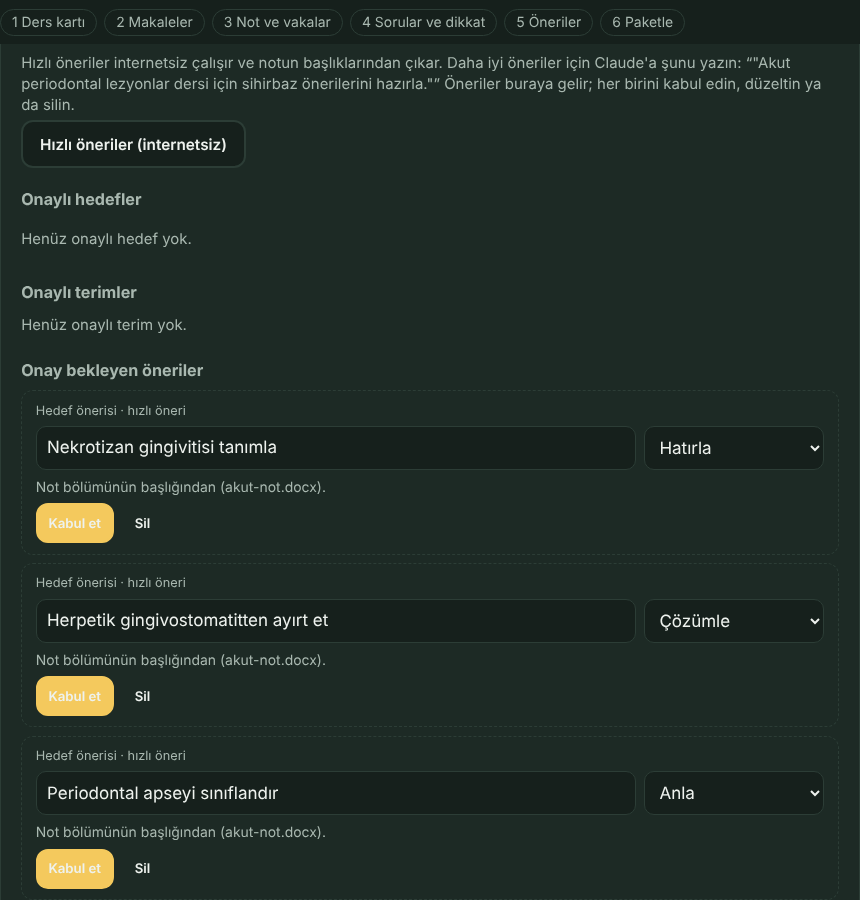
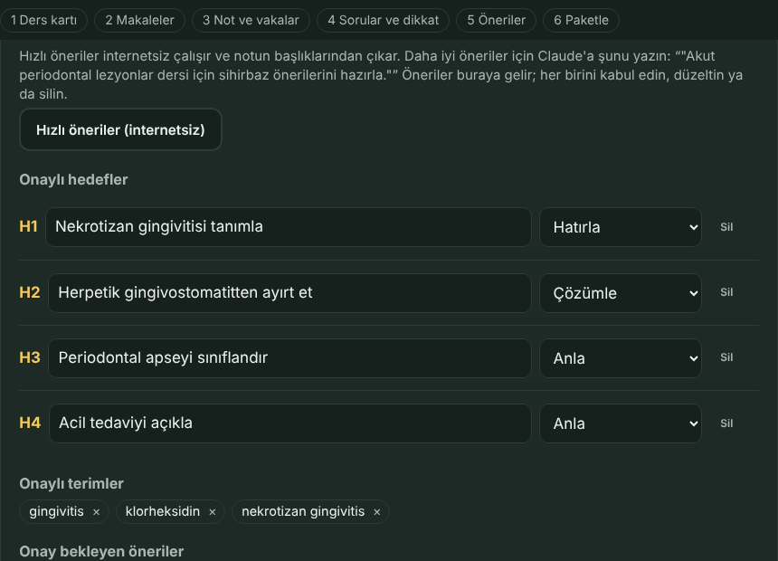
6. Denetle ve paketle. Eksikler kırmızı, dikkat edilecekler sarı görünür. Kırmızı kalmayınca
Paketle'ye basın. Paketler Belgeler\KlinikKoç Ders Paketleri klasörüne yazılır ve ders
bu bilgisayara da kurulur; canlı tahtada hemen kendiniz deneyebilirsiniz.
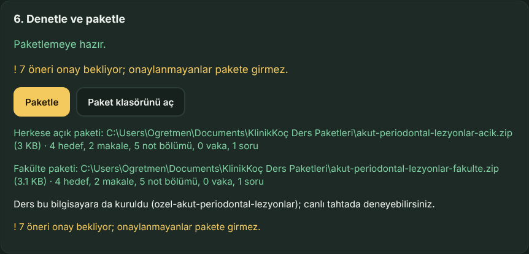
…-acik.zip) ve fakülte paketi (…-fakulte.zip).
Onay bekleyen öneriler varsa uyarı çıkar; onlar pakete girmez.Makaleden şekil eklemek
Abonelikli makalenin şeklini dosya olarak derse koymayın. Makalenin PDF'i bu bilgisayarda hazırsa Claude'a söyleyin; Claude sayfaya bakıp şeklin yerini (makale, sayfa, bölge) derse yazar ve kesilen şekli size gösterir. Pakete şeklin kendisi girmez; her öğrencinin bilgisayarı şekli kendi indirdiği makaleden çizer. Eklenen şekiller sihirbazın 3. adımında Makaleden şekiller listesinde görünür.
Claude'a: "Su 2010 makalesinin Şekil 3'ünü implant dersine sekil3 adıyla ekle."
Paylaşım kademeleri
Her not, vaka ve soru için bir kademe seçersiniz:
| Kademe | Herkese açık paket | Fakülte paketi | Yalnız bu bilgisayar |
|---|---|---|---|
| Herkese açık (CC BY 4.0) | var | var | var |
| Yalnız fakülte | yok | var | var |
| Hiç paylaşılmaz | yok | yok | var |
- Fakülte paketi öğrencinin bilgisayarına
ozel-…adıyla kurulur ve açık depoya hiçbir zaman girmez. - Hasta fotoğrafı kullanacaksanız kimliği belirlenemeyen ve eğitim için onam alınmış görseller seçin.
- Pakette olmayan bir not bölümü sorulursa eğitmen "bu kısmı bu pakette okuyamıyorum" der; uydurmaz.
Paketi öğrencilere vermek
- Kendi fakültenizin öğrencilerine fakülte paketini, başka üniversitelerden öğrencilere ya da herkese açık paketi verin. Paket bir zip dosyasıdır; e-posta, ders sayfası ya da USB bellekle iletilebilir.
- Paketlerde abonelikli makalelerin PDF'i hiçbir zaman yoktur; öğrenci makaleleri kendi bilgisayarına indirir.
- Dersi güncellediğinizde yeniden paketleyip yeni zip'i verin; öğrenci Güncelle dediğinde ilerlemesi korunur.
Öğrencilerden gelen değerlendirmeler
Ders kartındaki Değerlendirme formlarının gönderileceği e-posta alanına adresinizi yazarsanız öğrencinin formunda E-postayla gönder düğmesi çıkar. Adres pakete yazılır, öğrenci görür. Gelen e-postaları ya da ekteki dosyaları bir klasöre kaydedin; Claude hepsini tek özette toplar: puan ortalamaları, seçmeli soruların dağılımı, açık uçlu cevaplar, Claude'un tespitleri ve hedeflerin durumu. Deneme kayıtları sayılmaz.
Claude'a: "Belgeler'deki Değerlendirmeler klasöründeki formları özetle."
6. Sorun giderme
Ana sayfada "Henüz ders yok" yazıyor
Program derssiz gelir. Öğretmeninizin verdiği ders paketini ekleyin.
Ders paketleri sayfası "KlinikKoç açıkken çalışır" diyor
Sayfayı dosyaya çift tıklayarak açmışsınız. BASLAT-Windows (Mac'te BASLAT-Mac) dosyasına çift tıklayın ya da Claude'a "ders paketleri sayfasını aç" deyin.
"Paketin içinde tek bir ders klasörü olmalı" ya da "Bu bir KlinikKoç ders paketi değil"
Zip'i açıp yeniden sıkıştırmış olabilirsiniz. Öğretmeninizin verdiği zip'i hiç açmadan bırakın.
Makalelerin çoğu "Eksik" kalıyor
- Bilgisayarınız internete bağlı mı? Abonelikli dergiler için kampüste eduroam'a ya da üniversitenizin VPN'ine bağlanıp Makaleleri bul ve indir'e yeniden basın.
- Bazı yayıncılar otomatik indirmeye izin vermez: Yayıncı sayfasını aç ile PDF'i indirip sayfaya bırakın.
- "Okunamadı" görünüyorsa PDF taranmış bir görüntü olabilir; yayıncıdan metinli sürümünü indirin.
Claude'da "klinik-koc" görünmüyor ya da araçlar çalışmıyor
- Claude'u tamamen kapatıp açtınız mı? (Windows'ta saatin yanındaki ^ → Claude → sağ tık → Çık; Mac'te Cmd+Q.)
- KUR dosyasını yeniden çalıştırın; sonunda bulduğu Claude ayar dosyalarını listeler.
- KlinikKoç klasörünü taşıdıysanız KUR'u yeni yerde yeniden çalıştırın.
Ses çıkmıyor
- Canlı tahtada bir kez Tam ekran başlat'a dokundunuz mu? "Sesi açmak için dokunun" düğmesi görünüyorsa ona basın.
- Üst çubukta "tarayıcı sesi (yedek)" yazıyorsa doğal ses kurulmamıştır; KUR'u yeniden çalıştırıp "E" deyin.
- Üst çubukta "Piper (yedek)" yazıyorsa Pocket sesi açılamamıştır; bir dakika sonra kendiliğinden yeniden denenir. Beklemek istemezseniz Claude'a "sesi yeniden başlat" deyin.
- Oynatıcıda "Türkçe ses bulunamadı" uyarısı çıkarsa anlatım altyazıyla sürer.
Ara verip döndüğümde Claude beni duymuyor
Claude sessizlikte bir süre dinlemeyi sürdürür, sonra bırakır. Döndüğünüzde mikrofona basıp konuşmanız yeter: Otomatik gönder açıksa sorunuz Claude sohbetine kendiliğinden gönderilir ve Claude tahtada cevap verir. Mac'te ilk seferde Sistem Ayarları › Gizlilik ve Güvenlik › Erişilebilirlik izni istenir. Olmazsa sohbete tahtaya bak yazın; tahtada söyledikleriniz kaybolmaz.
Bilgisayarda iki KlinikKoç klasörü var
Claude yalnız KUR'u en son çalıştırdığınız klasörü kullanır. Tahta açılırken öbür klasörün penceresi açıksa onu kapatıp doğru klasörden açar. Kapatamazsa siyah BASLAT penceresini kendiniz kapatın. Eski klasörü kullanmayacaksanız silebilirsiniz.
Mikrofonla söylediklerim yanlış yazılıyor
Söylediğiniz kutuda 2–3 saniye görünür; kutuya dokunup düzeltin. Mikrofonun yanındaki küçük etiketten yerel tanıyıcıyı (Duyu-small) seçebilirsiniz; tıbbi terimlerde daha doğrudur.
Depolama sınırı aşıldı uyarısı
Bitirdiğiniz dersleri arşive kaldırın ya da sınırı yükseltin. Hiçbir ders kendiliğinden silinmez.
Başka bir sorun için: GitHub'da bildirin (ad, numara ya da hasta bilgisi yazmayın).